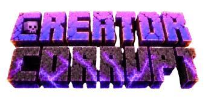

Minecraft Java Edition · SMP voor creators
Wie van jullie is corrupt?
Creator Corrupt is een SMP waarin een paar creators in het geheim corrupted zijn. Niemand weet wie. Je bouwt, overleeft en speelt events, en elke stemronde kiezen jullie samen wie eruit moet. Kies goed, want wie eruit wordt gestemd, is er echt uit.

- JavaAlleen Java Edition
- 14:00 – 02:00Openingstijden
- Max. 40Creators
- WekelijksEen event
Het team
Creator Corrupt wordt georganiseerd door Jade en Bintje.
Speluitleg
Zo werkt Creator Corrupt, van de eerste dag tot de finale.
Hoe een seizoen verloopt
-
De start
We beginnen op een zaterdagavond en spelen door tot de server sluit. Daarna gelden de vaste openingstijden van 14:00 tot 02:00.
-
Overleven en bouwen
Iedereen spawnt op een eigen, willekeurige plek op één groot eiland met alle biomes. Vanaf daar bouw je je basis op.
-
Stemrondes
Om de drie dagen wordt er gestemd en gaan er drie creators uit. Elke week is er een event.
-
De finale
Wie overblijft speelt de finale. Hoe die werkt, hoor je pas als je er bent.
Corrupted en stemmen
Corrupted
Een paar creators zijn in het geheim corrupted. Je rol is geheim: je vertelt hem aan niemand, ook niet op stream.
Stemmen
Tijdens een stemronde krijg je een scherm met de hoofden van alle creators. Je stemt op één persoon die volgens jou corrupted is.
Doodgaan
Ga je dood tijdens de SMP? Dan verlies je je eerstvolgende stem. Je speelt wel gewoon verder.
Eruit gestemd
Word je eruit gestemd, dan ben je echt dood en lig je eruit. Er is geen weg terug.
De wereld
Trial chambers
Hier vind je de beste loot: sterke zwaarden, enchanted armor en enchanted golden apples. Ook blaze rods voor potions haal je hier.
Events
Elke week is er een event. Let goed op in de server, want daar vind je hints over wat er gaat komen.
De regels
Alle regels en itemlimieten staan in een los document.